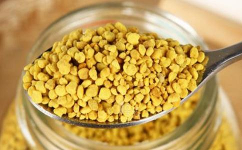

蜂蜂花粉能提供人体所需要的营养素，增强机体的新陈代谢，调节内分泌功能，提高免疫力，来达到美容效果。蜂花粉也是治疗前列腺炎的理想药品。对治疗前列腺增生有效率为93%、慢性前列腺炎有80%以上短期内愈合、100例前列腺炎患者有效率达80%。
花粉含有促使老年人机体维持正常功能以及补充机体必需的蛋白质、氨基酸、维生素、酶类和微量元素等营养素，特别是所含丰富的核酸起着功不可没的特殊作用。
人体发生衰老的因素很多，但除病原体感染、放射线及毒物伤害等外，还有随年龄增长而自然衰退的内在原因。人体在出生后到25岁之间，细胞分裂速度快，这要归因于DNA和RNA这两类核酸含量丰富，活力充沛；25岁以后，人体对核酸的合成能力就大大降低了，核酸数量不足，活力降低，所产生的DNA就不完全，于是有缺陷或劣质细胞就陆续出现，从而导致人体逐渐衰老。
习惯性便秘是常见的病症，给患者带来和心里负担，对中老年人，便秘
常食用蜂花粉者可长寿，这是历史证明的事实。因为蜂花粉含有核酸，食用后它可使细胞再生，可延缓人体衰老和延长
另外蜂花粉中所含硒能减少过氧化物的形成，从而起到抗衰老作用。这也是服用蜂花粉可长寿的重要原因之一。
花粉中糖类总含量为25～40%，糖类种类齐全。包含单糖、低聚糖和多糖等。其中最有开发前景的花粉多糖，它具有很强的免疫能力，具有明显的防癌功效。
蜂花粉的美容功效一般的美容用品，化妆品只能治表，而服用蜂花粉能调节人体内分泌，平衡人体机能，由体内直达肌肤从根本上激活表皮细胞，增强，皮肤新陈代谢，消除或减轻色斑、皱纹，防止皮肤衰老、粗糙、使皮肤柔滑细嫩，富有光泽和弹性。我国唐代的武则天、清代的慈禧太后都选用花粉来调理美容。百分之九十的国外名模都用花粉美容。目前市场上的“前列康片”、“靓靓养颜王”等食品、药品、化妆品都是以蜂花粉为原料。
在罗马尼亚、玻利维亚，也有因
据卫生部编辑出版的《中华本草》记载：花粉含有丰富的遗传物质，天天食用可以快速消除疲劳、消除便秘、消除四肢酸痛、恢复体力，并能消除粉刺、营养肌肤、美容养颜，对糖尿病、心脑血管疾病、肿瘤、前列腺炎有辅助治疗作用1、增强人体综合免疫功能：花粉多糖能激活巨噬细胞的吞噬活动，提高人体抗病能力。国家体委科研组曾对花粉提升运动员能力进行研究，每天食花粉15克，连续食用三个月，证实花粉可明显提高心脏工作能力、增强耐力和骨骼肌的力量，运动后心跳增加数比食花粉前明显减少，这些效果对一个运动员是非常重要的，因此常被推荐为运动员长期服食的营养补给品。国家体委正式将花粉定为我国运动员的保健食品。
蜂花粉属营养性的美容化妆品，花粉中的VE、超氧化歧化酶（SOD）、硒等成分能滋润营养肌肤，恢复皮肤的弹性和光洁。花粉中的肌醇可使白发变黑，脱发渐生，保持头发乌黑亮丽。根据试验，食用花粉的老鼠可明显增加老年鼠内红血球中ATP的含量，中老年鼠食用花粉后心肌自由基减少，而肝、肺组织中超氧化物歧化X(SOD)明显增加一倍，肺部尤其显著，肌肉及大脑皮层的脂褐质（老年色素）也明显的减少，另花粉也可使家蝇的自由基化学发光强度减少，SOD的活性显著增强，此提示花粉抗衰老是有效的。
蜂花粉的疾病防治功效花粉中的黄酮类化合物能有效清除血管壁上脂肪的沉积，从而起软化血管和降血脂的作用。
花粉是前列腺炎的克星，以
服用蜂花粉可以吸收足够的营养，造成饱食感。同时，花粉中的卵磷脂可燃烧过剩的脂肪，达到减肥的目的。
花粉有许多杀菌成份，能杀灭大肠杆菌等，并能防治便秘。花粉能使肠道蠕动增加及增加回、结肠之张力而促进排便。花粉对胃口不佳、消化吸收能力差、消瘦病人、慢性胃炎、胃溃疡等胃肠功能紊乱者有明显改善效果，在食用一段时间后，可增加食欲、促进吸收，增强消化系统功能，使精神好转，体重增加，此可能与花粉含有抗菌物质、多种维生素及X类等生物活性物质，有改善及修复消化道的功能有关。
花粉中的黄酮类化合物同样可防止脂肪在肝上的沉积。
促进睡眠。
花粉对贫血、糖尿病、改善记忆力、更年期障碍等有较好效果。